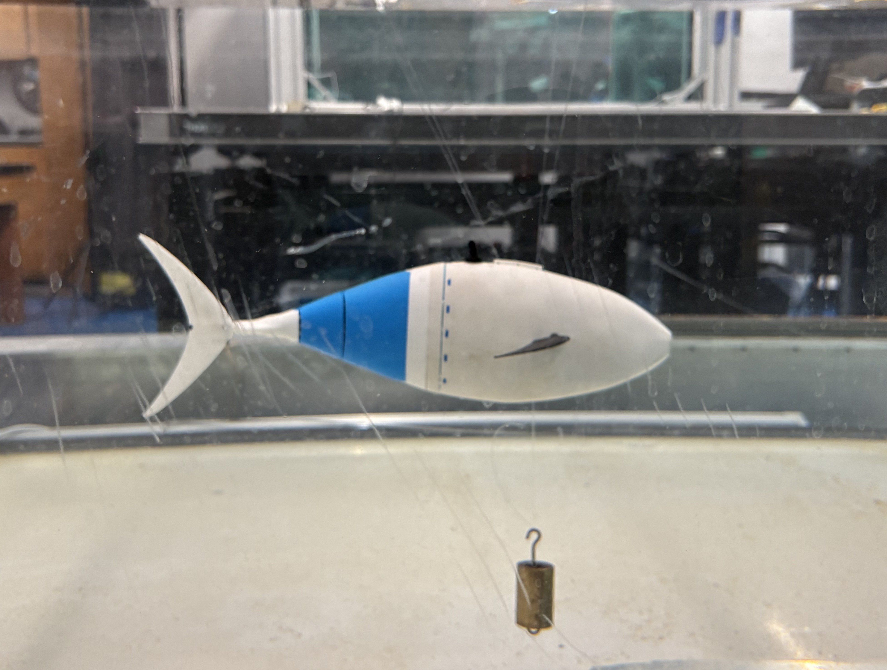
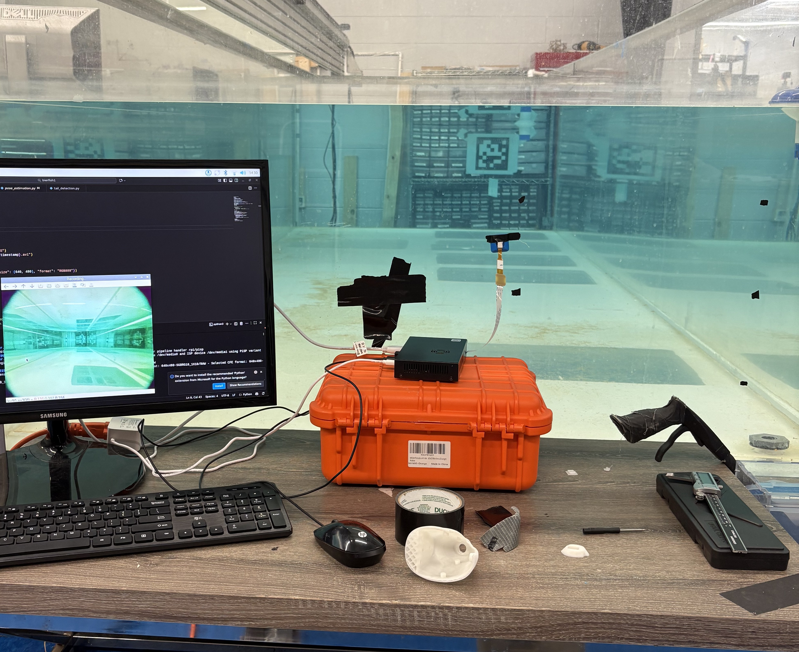
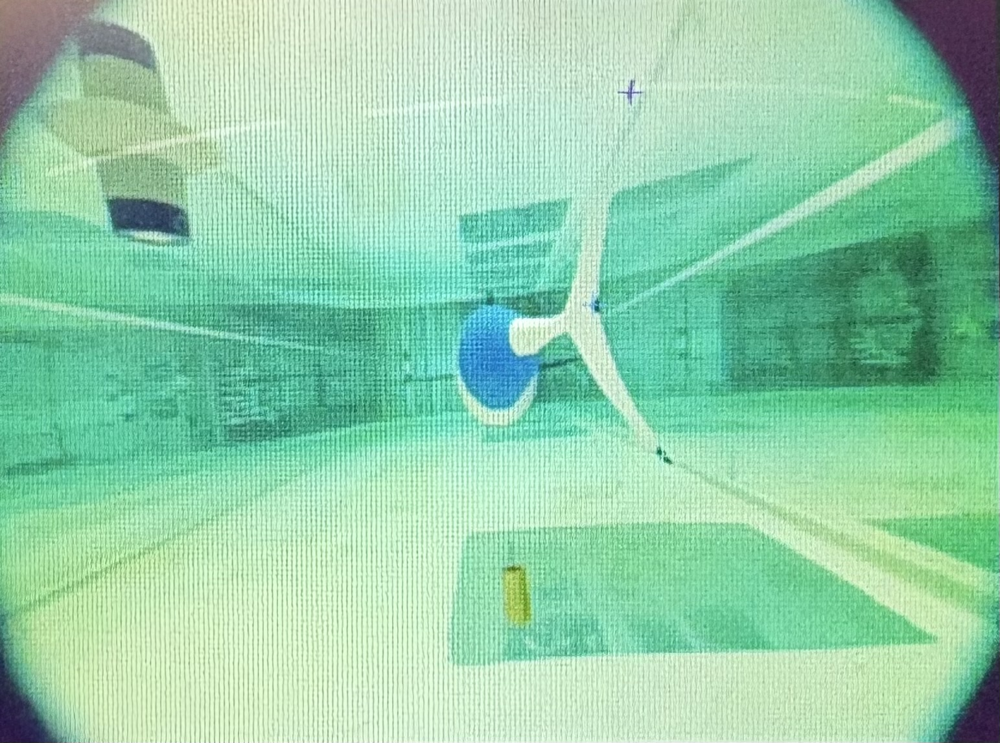

TunaBot
SolidWorks, 3D Printing, Computer Vision, Testing
Objectives
The goal of this research is to create an autonomous navigation system for a small underwater vehicle, the TunaBot. By integrating computer vision and pressure sensor data to the robotic fish, we aim to enable it to swarm and school like a real tuna. My main role in this project is to train and test the computer vision algorithms that will allow the TunaBot to see and react to other TunaBots in its surroundinngs.
Outcomes & Contribution
The principal outcome of this project was a trained model capable of recognizing other TunaBots, mapping their speed and direction from the movement of their tail actuators.
- Computer Vision Training: I used Deep Lab Cut, a python based Machine Learning software to train the TunaBot's computer vision system for real time detection.
- Research Testing: I personally conducted experiments to train and validate the performance of the computer vision algorithms in real-world scenarios. This included making a custom testing rig to gather the most realistic and effective training data.
Technical Details & Skills
This project was very different than my previous work, as it required a deeper understanding of machine learning and computer vision software.
Software:
- Machine Learning Software: Labeling testing videos with Deep Lab Cut, creating training datasets, and optimizing computer vision models for autonomous detection.
- Python: Using original scripts and libraries to process data and implement Deep Lab Cut models for live video analysis.

Flow tank testing

Wet-testing the tunabot rig

Testing set up for TunaBot computer vision training

Deep Lab Cut training interface with machine learning tracking
Contact Me 🤙
Mobile: (571) 355-5253
Email: nrl80877@gmail.com
University: xsp8qh@virginia.edu